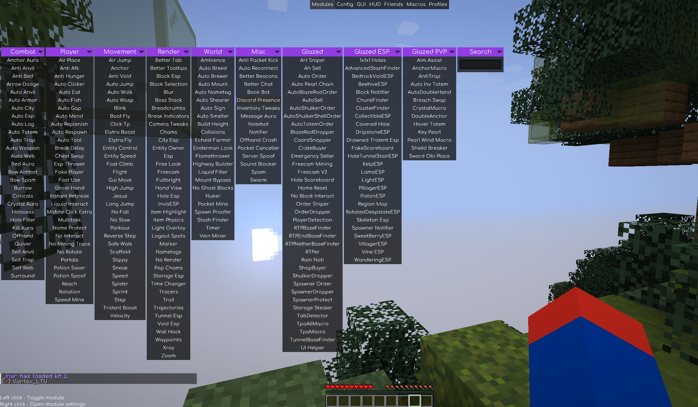

What does it include?
- Automated /AH Auction House Sniping
- Underground Tunnel & Base Hunting Coordinates
- StorageESP & Player Coordinate Snapper
- Fully Undetected on DonutSMP 1.21+
Glazed Addon (DonutSMP) is a DonutSMP client or utility listing manually tested by the ClientStash owner on Minecraft 1.21.11 and 26.2.
Status reflects firsthand owner testing. Server and anti-cheat updates can change results after review.

Glazed is a Meteor Client add-on for DonutSMP, listed for Minecraft 1.21.x and 26.x through 26.3. Its listed modules include auction-house sniping, coordinate tools, tunnel and base finding, combat macros and optional OpSec integration.
This listing covers 1.21.x, 26.1.x, 26.2, 26.3. The ClientStash owner has directly tested the listed mod on Minecraft 1.21.11 and 26.2.
.jar in .minecraft/mods.The ClientStash owner installed this listing with its stated requirements, launched it on Minecraft 1.21.11 and 26.2, exercised representative modules, and connected to DonutSMP while observing anti-cheat behavior.
Undetectable means no detection occurred during those owner tests. True bypass means the claimed bypass function worked during those tests. Verification record updated November 15, 2026.
This listing covers 1.21.x, 26.1.x, 26.2, 26.3. ClientStash has manually tested the public listing on Minecraft 1.21.11 and 26.2; choose a build that matches your installation.
Yes. The ClientStash owner manually tested Glazed Addon (DonutSMP) on DonutSMP with Minecraft 1.21.11 and 26.2. Its UNDETECTED status records the result of those tests.
The listed requirements are Fabric Loader, Fabric API, Meteor Client, OpSec Mod (Recommended). Verify that every dependency matches your selected Minecraft build before launching.
Install the matching loader and dependencies, place the JAR in the .minecraft/mods folder, and launch the matching profile.
Install Meteor Client and OpSec into your .minecraft/mods folder.